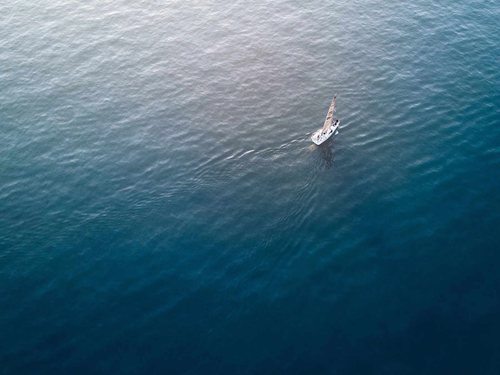
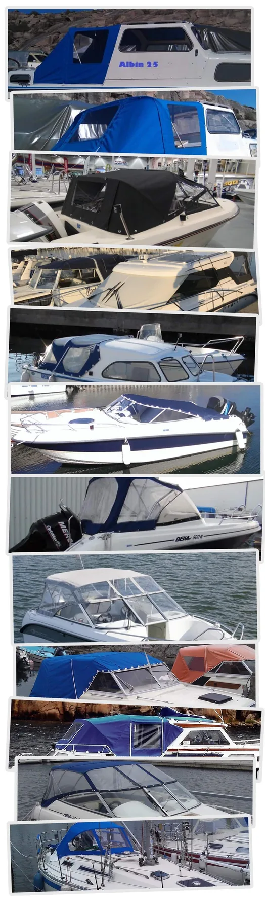

Ett familjeföretag i andra generationen med över 50 års hantverk, mallregister och partnerskap i hela Norden.
Henricssons Båtkapell grundades 1967 av Alf "Henric" Henricsson och har i över 50 år levererat båtkapell till både båtindustri och båtägare.
Under 1970-talet och en bit in på 80-talet var våra originalkapell standard på flera svenska varv, bland andra:
I dag innehåller vårt mallregister hundratals standardkapell för populära serietillverkade båtar, bland annat Albin, Flipper, Jofa, Maxim, Nimbus, Ryds/Triss, Saga, Uttern och Yamarin.
1987 klev Niclas Henricsson in i verksamheten. När Henric gick i pension tog Niclas över och driver i dag företaget vidare under namnet Henricssons Båtkapell AB.
Du hittar oss på Energigatan 17E i Kungsbacka.
Genom nära samarbeten i Sverige, Norge, Finland och Danmark kan vi erbjuda originalkapell till ett stort antal modeller.
Norska märken (urval)
Finska märken (urval)
Danska märken
Vi har även mallar till sprayhoods och sittbrunnskapell för segelbåtar som Albin, Maxi, Najad, Omega och Hallberg-Rassy m.fl.
Välkommen att kontakta oss!

Eller besök vår verkstad på Energigatan 17E i Kungsbacka. Vi svarar oftast samma dag.